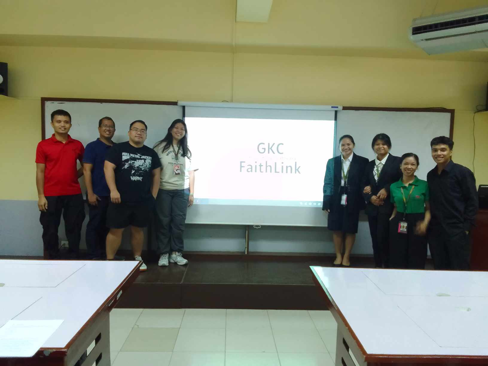
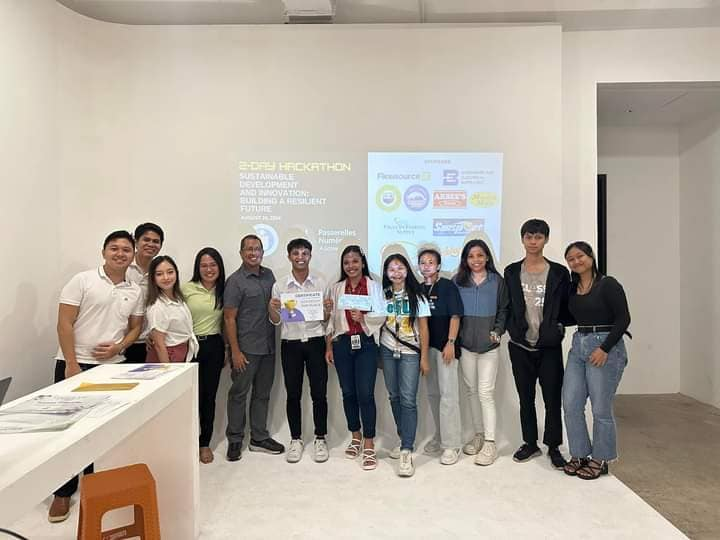
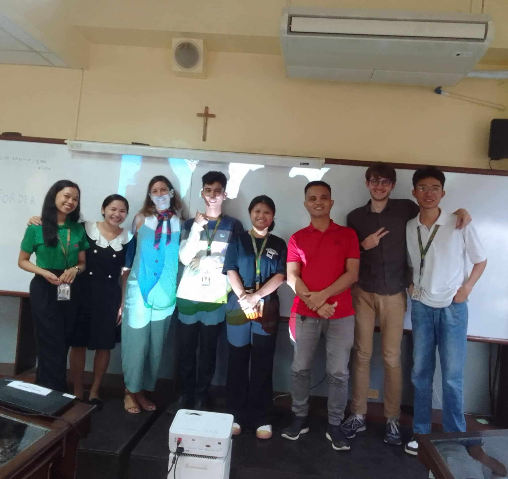

GKC FaithLink
GKC FaithLink is our capstone project, developed to address challenges faced by
Glorious King's Cathedral, such as managing church activities, donations,
and financial records. Our project focuses on features for donations, events,
and announcements, fulfilling our final university requirements.

2-Day Hackathon: Innovation in Action
During a two-day hackathon focused on building solutions concepts, I collaborated with a team to design a
PN Management System, gaining valuable skills in teamwork, brainstorming, and communication.

Summer Bootcamp
During a two-month Summer Bootcamp led by Sir Jullien Moullec,
we redesigned the official website of the University of San Jose Recoletos (USJR).
.png)
SHOPhone
This project is a stepping stone towards a full-fledged e-commerce website for phones.
We aim to create a platform where users can easily browse, compare, and buy a variety of mobile devices. The goal is
to provide a seamless and enjoyable shopping experience for anyone seeking their next smartphone.

My First Figma Design
My first experience with Figma resulted in this coffee hub design.
The instructor's project allowed complete creative freedom, providing valuable learning.
.png)
Prototyping Our GKC FaithLink
This picture showcases our prototype for GKC FaithLink, designed using Figma for our capstone project.
Creating this prototype allowed us to test and refine our design before development.


{kind=link}
{kind=link}
{kind=link}